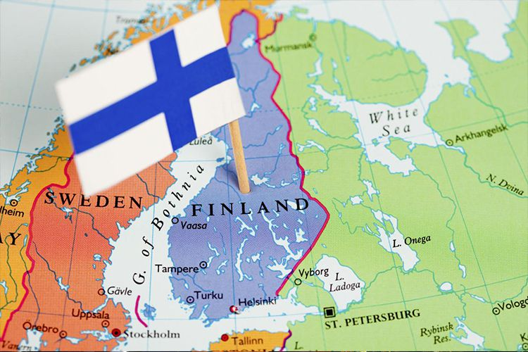

| Впервые упоминание о Финляндии (Fenni) появилось у Тацита в его сочинении Germania (98 год). Автор, руководствуясь только рассказами, описывает жителей этой страны как примитивных дикарей, которые не знают ни оружия, ни лошадей, ни жилищ, но питаются травами, одеваются в звериные шкуры, спят на земле. Их единственным орудием являются копья, которые они, не зная железа, изготавливают из кости. Тацит различает финнов и Sami (Lappen) — соседствующий с ними народ, живший на той же территории и имевший, по-видимому, сходный образ жизни. На заре нашей эры обширный регион, который начал именоваться Финляндией лишь в XV веке, ещё не составлял ни государственного, ни культурного целого. В первые 400 лет н. э., с началом развития земледелия, регион мог прокормить лишь несколько десятков тысяч жителей, так как климат и природа были суровы, а новые способы производства доходили из ранних земледельческих обществ Средиземноморья медленно и с трудом. |  |